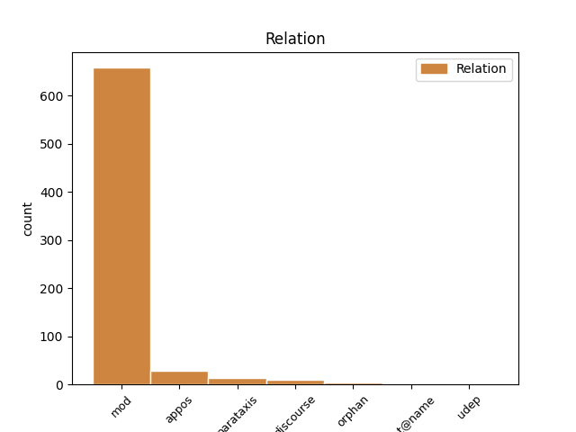
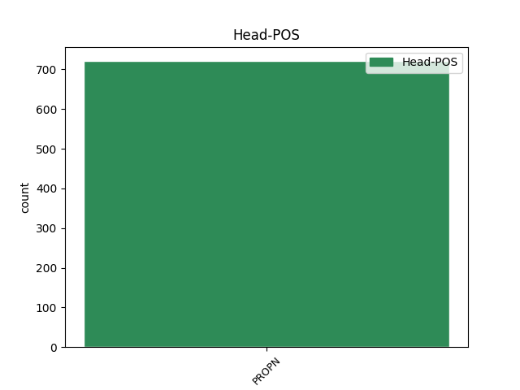
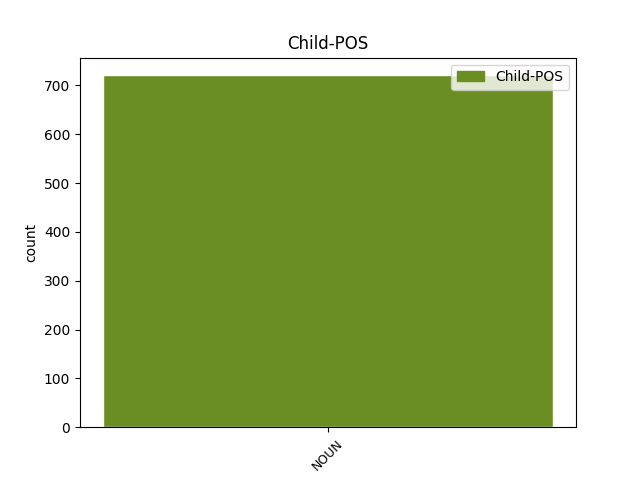

Distribution of features within this leaf



Agreement Rules sorted by frequency.
- When the dependent token is the modifer(mod) of the head token, and the head token is PROPN and the dependent token is NOUN.
1 Kā _ _ _ _ 0 _ _ _
2 atzīst _ _ _ _ 0 _ _ _
3 vairāki _ _ _ _ 0 _ _ _
4 VD _ _ _ _ 0 _ _ _
5 teologi _ _ _ _ 0 _ _ _
6 , _ _ _ _ 0 _ _ _
7 VD _ _ _ _ 0 _ _ _
8 tekstiem _ _ _ _ 0 _ _ _
9 piemērotāka _ _ _ _ 0 _ _ _
10 ir _ _ _ _ 0 _ _ _
11 skandināvu _ _ _ _ 0 _ _ _
12 pētnieka pētnieks NOUN ncmsg1 Case=Gen|Gender=Masc|Number=Sing 13 mod _ LvtbNodeId=a-z99-p16s1w12
13 Johana Johans PROPN npmsg1 Case=Gen|Gender=Masc|Number=Sing 0 _ _ _
14 Galtunga _ _ _ _ 0 _ _ _
15 ( _ _ _ _ 0 _ _ _
16 Galtung _ _ _ _ 0 _ _ _
17 ) _ _ _ _ 0 _ _ _
18 piedāvātā _ _ _ _ 0 _ _ _
19 teorija _ _ _ _ 0 _ _ _
20 par _ _ _ _ 0 _ _ _
21 vardarbību _ _ _ _ 0 _ _ _
22 , _ _ _ _ 0 _ _ _
23 kurā _ _ _ _ 0 _ _ _
24 izšķir _ _ _ _ 0 _ _ _
25 tiešu _ _ _ _ 0 _ _ _
26 , _ _ _ _ 0 _ _ _
27 strukturālu _ _ _ _ 0 _ _ _
28 un _ _ _ _ 0 _ _ _
29 kultūras _ _ _ _ 0 _ _ _
30 vardarbību _ _ _ _ 0 _ _ _
31 . _ _ _ _ 0 _ _ _
1 Britu _ _ _ _ 0 _ _ _
2 dziedātāja _ _ _ _ 0 _ _ _
3 Adele _ _ _ _ 0 _ _ _
4 trešdien _ _ _ _ 0 _ _ _
5 iesnu _ _ _ _ 0 _ _ _
6 dēļ _ _ _ _ 0 _ _ _
7 atcēlusi _ _ _ _ 0 _ _ _
8 koncertu _ _ _ _ 0 _ _ _
9 Fīniksā Fīniksa PROPN npfsl4 Case=Loc|Gender=Fem|Number=Sing 0 _ _ _
10 , _ _ _ _ 0 _ _ _
11 Arizonas _ _ _ _ 0 _ _ _
12 štatā štats NOUN ncmsl1 Case=Loc|Gender=Masc|Number=Sing 9 appos _ LvtbNodeId=a-p7385-p1s1w12|SpaceAfter=No
13 , _ _ _ _ 0 _ _ _
14 uz _ _ _ _ 0 _ _ _
15 kuru _ _ _ _ 0 _ _ _
16 visas _ _ _ _ 0 _ _ _
17 biļetes _ _ _ _ 0 _ _ _
18 bija _ _ _ _ 0 _ _ _
19 izpārdotas _ _ _ _ 0 _ _ _
20 . _ _ _ _ 0 _ _ _
1 Boriss _ _ _ _ 0 _ _ _
2 Cilevičs _ _ _ _ 0 _ _ _
3 ( _ _ _ _ 0 _ _ _
4 viens _ _ _ _ 0 _ _ _
5 no _ _ _ _ 0 _ _ _
6 Apatrīdu _ _ _ _ 0 _ _ _
7 līgas _ _ _ _ 0 _ _ _
8 iniciatoriem _ _ _ _ 0 _ _ _
9 un _ _ _ _ 0 _ _ _
10 līdzdzpriekšsēdētājiem _ _ _ _ 0 _ _ _
11 ) _ _ _ _ 0 _ _ _
12 , _ _ _ _ 0 _ _ _
13 Jakovs _ _ _ _ 0 _ _ _
14 Pliners _ _ _ _ 0 _ _ _
15 un _ _ _ _ 0 _ _ _
16 Vladimirs Vladimirs PROPN npmsn1 Case=Nom|Gender=Masc|Number=Sing 0 _ _ _
17 Buzajevs _ _ _ _ 0 _ _ _
18 ( _ _ _ _ 0 _ _ _
19 Cilvektiesību _ _ _ _ 0 _ _ _
20 komiteja komiteja NOUN ncfsn4 Case=Nom|Gender=Fem|Number=Sing 16 parataxis _ LvtbNodeId=a-z106-p210s3w20|SpaceAfter=No
21 ) _ _ _ _ 0 _ _ _
22 bija _ _ _ _ 0 _ _ _
23 arī _ _ _ _ 0 _ _ _
24 vieni _ _ _ _ 0 _ _ _
25 no _ _ _ _ 0 _ _ _
26 akcijas _ _ _ _ 0 _ _ _
27 pret _ _ _ _ 0 _ _ _
28 pilsonības _ _ _ _ 0 _ _ _
29 politiku _ _ _ _ 0 _ _ _
30 iniciatoriem _ _ _ _ 0 _ _ _
31 un _ _ _ _ 0 _ _ _
32 organizatoriem _ _ _ _ 0 _ _ _
33 . _ _ _ _ 0 _ _ _
1 Zanes _ _ _ _ 0 _ _ _
2 tēvs _ _ _ _ 0 _ _ _
3 Jānis Jānis PROPN npmsn2 Case=Nom|Gender=Masc|Number=Sing 0 _ _ _
4 Dzenis dzenis NOUN ncmsn2 Case=Nom|Gender=Masc|Number=Sing 3 flat@name _ LvtbNodeId=a-p633-p9s4w4
5 šobrīd _ _ _ _ 0 _ _ _
6 ir _ _ _ _ 0 _ _ _
7 arī _ _ _ _ 0 _ _ _
8 viņas _ _ _ _ 0 _ _ _
9 treneris _ _ _ _ 0 _ _ _
10 . _ _ _ _ 0 _ _ _
1 Šajā _ _ _ _ 0 _ _ _
2 sezonā _ _ _ _ 0 _ _ _
3 formāts _ _ _ _ 0 _ _ _
4 adaptēts _ _ _ _ 0 _ _ _
5 16 _ _ _ _ 0 _ _ _
6 pasaules _ _ _ _ 0 _ _ _
7 valstīs _ _ _ _ 0 _ _ _
8 , _ _ _ _ 0 _ _ _
9 tajā _ _ _ _ 0 _ _ _
10 skaitā skaits NOUN ncmsl1 Case=Loc|Gender=Masc|Number=Sing 11 discourse _ LvtbNodeId=a-p8468-p10s3w10
11 Lietuvā Lietuva PROPN npfsl4 Case=Loc|Gender=Fem|Number=Sing 0 _ _ _
12 un _ _ _ _ 0 _ _ _
13 Igaunijā _ _ _ _ 0 _ _ _
14 . _ _ _ _ 0 _ _ _
Disagree Examples:
1 Daiļa _ _ _ _ 0 _ _ _
2 ir _ _ _ _ 0 _ _ _
3 diženā _ _ _ _ 0 _ _ _
4 Hēra Hēra PROPN npfsn4 Case=Nom|Gender=Fem|Number=Sing 0 _ _ _
5 - _ _ _ _ 0 _ _ _
6 lielām _ _ _ _ 0 _ _ _
7 acīm acs NOUN ncfpd6 Case=Dat|Gender=Fem|Number=Plur 4 appos _ LvtbNodeId=a-c15-p10s3w7|SpaceAfter=No
8 , _ _ _ _ 0 _ _ _
9 lillijbaltām _ _ _ _ 0 _ _ _
10 rokām _ _ _ _ 0 _ _ _
11 , _ _ _ _ 0 _ _ _
12 ar _ _ _ _ 0 _ _ _
13 vainagu _ _ _ _ 0 _ _ _
14 uz _ _ _ _ 0 _ _ _
15 brīnišķīgajām _ _ _ _ 0 _ _ _
16 , _ _ _ _ 0 _ _ _
17 viļņainajām _ _ _ _ 0 _ _ _
18 cirtām _ _ _ _ 0 _ _ _
19 ; _ _ _ _ 0 _ _ _
20 valdonīgi _ _ _ _ 0 _ _ _
21 , _ _ _ _ 0 _ _ _
22 mierīgi _ _ _ _ 0 _ _ _
23 un _ _ _ _ 0 _ _ _
24 majestātiski _ _ _ _ 0 _ _ _
25 mirdz _ _ _ _ 0 _ _ _
26 viņas _ _ _ _ 0 _ _ _
27 acis _ _ _ _ 0 _ _ _
28 . _ _ _ _ 0 _ _ _
1 Eshila _ _ _ _ 0 _ _ _
2 traģēdijā _ _ _ _ 0 _ _ _
3 stāstīts _ _ _ _ 0 _ _ _
4 par _ _ _ _ 0 _ _ _
5 Tēbu _ _ _ _ 0 _ _ _
6 valdnieka _ _ _ _ 0 _ _ _
7 Edipa _ _ _ _ 0 _ _ _
8 dēlu dēls NOUN ncmsa1 Case=Acc|Gender=Masc|Number=Sing 9 mod _ LvtbNodeId=a-c15-p36s2w8
9 Eteokla Eteokls PROPN npmsg1 Case=Gen|Gender=Masc|Number=Sing 0 _ _ _
10 un _ _ _ _ 0 _ _ _
11 Polineika _ _ _ _ 0 _ _ _
12 cīņu _ _ _ _ 0 _ _ _
13 par _ _ _ _ 0 _ _ _
14 varu _ _ _ _ 0 _ _ _
15 . _ _ _ _ 0 _ _ _
1 ELĪZA Elīza PROPN npfsn4 Case=Nom|Gender=Fem|Number=Sing 0 _ _ _
2 dusmās dusmas NOUN ncfdl4 Case=Loc|Gender=Fem|Number=Ptan 1 udep _ LvtbNodeId=a-d140a-p286s1w2|SpaceAfter=No
3 . _ _ _ _ 0 _ _ _
1 Vispirms _ _ _ _ 0 _ _ _
2 viņai _ _ _ _ 0 _ _ _
3 bija _ _ _ _ 0 _ _ _
4 trauks _ _ _ _ 0 _ _ _
5 ar _ _ _ _ 0 _ _ _
6 zelta _ _ _ _ 0 _ _ _
7 zivtiņām zivtiņa NOUN ncfpd4 Case=Dat|Gender=Fem|Number=Plur 8 mod _ LvtbNodeId=a-d199-p18s3w7
8 Zeltīti Zeltīte PROPN npfsa5 Case=Acc|Gender=Fem|Number=Sing 0 _ _ _
9 , _ _ _ _ 0 _ _ _
10 Sarkangalvīti _ _ _ _ 0 _ _ _
11 un _ _ _ _ 0 _ _ _
12 Melno _ _ _ _ 0 _ _ _
13 Pēteri _ _ _ _ 0 _ _ _
14 . _ _ _ _ 0 _ _ _
1 Pēc _ _ _ _ 0 _ _ _
2 tam _ _ _ _ 0 _ _ _
3 viņa _ _ _ _ 0 _ _ _
4 savā _ _ _ _ 0 _ _ _
5 īpašumā _ _ _ _ 0 _ _ _
6 ieguva _ _ _ _ 0 _ _ _
7 pundurpapagailīšus _ _ _ _ 0 _ _ _
8 vārdā vārds NOUN ncmsl1 Case=Loc|Gender=Masc|Number=Sing 9 mod _ LvtbNodeId=a-d199-p18s4w8
9 Smits Smits PROPN npmsn1 Case=Nom|Gender=Masc|Number=Sing 0 _ _ _
10 un _ _ _ _ 0 _ _ _
11 Smulē _ _ _ _ 0 _ _ _
12 , _ _ _ _ 0 _ _ _
13 bruņurupuci _ _ _ _ 0 _ _ _
14 Govindu _ _ _ _ 0 _ _ _
15 un _ _ _ _ 0 _ _ _
16 , _ _ _ _ 0 _ _ _
17 visbeidzot _ _ _ _ 0 _ _ _
18 , _ _ _ _ 0 _ _ _
19 dzeltenbrūno _ _ _ _ 0 _ _ _
20 tīģerkaķi _ _ _ _ 0 _ _ _
21 Šerekānu _ _ _ _ 0 _ _ _
22 . _ _ _ _ 0 _ _ _